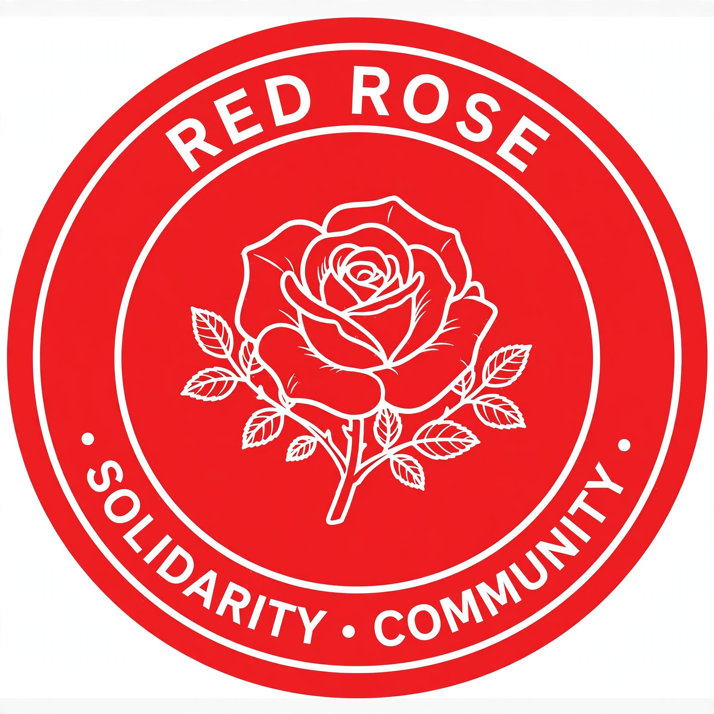

The Democratic Socialists of America (DSA) is a socialist political organisation in the United States. Founded in 1982 by a merger of the Democratic Socialist Organizing Committee and the New American Movement, it is not a political party but a membership organisation whose members campaign for democratic socialist policies and frequently work within Democratic Party primaries. It describes itself as the largest socialist organisation in the United States.
DSA's founding figure was the writer and activist Michael Harrington, author of The Other America (1962). For decades the organisation remained small, numbering only several thousand members. Membership grew rapidly after 2016, driven by the presidential campaigns of Bernie Sanders and opposition to Donald Trump, surpassing 90,000 members by 2021, before declining somewhat in subsequent years.
DSA advocates policies including Medicare for All, a Green New Deal, labour union organising, rent control and social housing, and abolitionist positions on policing and prisons; its chapters also engage in mutual aid and strike support. The organisation is internally pluralist, containing a range of socialist tendencies, and its national conventions set priorities through delegate votes.
DSA-endorsed candidates have won office at municipal, state, and federal levels, generally running on Democratic ballot lines. Members elected to Congress have included Alexandria Ocasio-Cortez and Rashida Tlaib, first elected in 2018. The organisation's electoral strategy and its relationship to the Democratic Party are subjects of continuing internal and public debate.
See also: Democratic socialism · Michael Harrington · Bernie Sanders